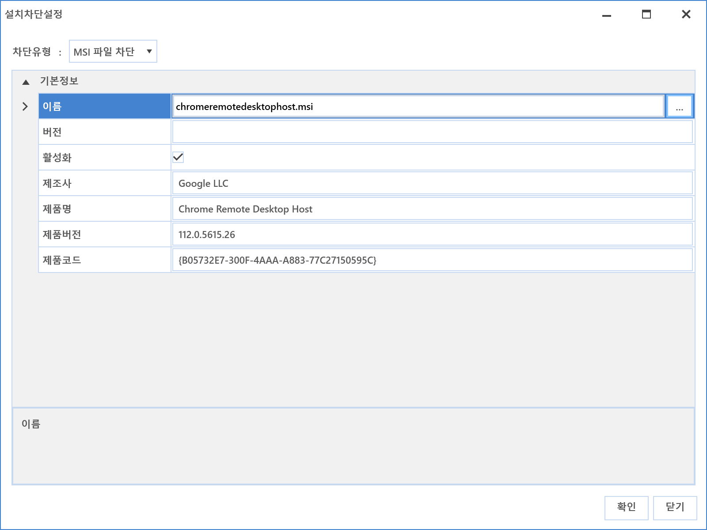
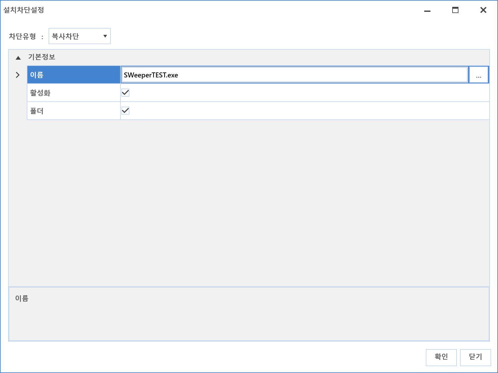
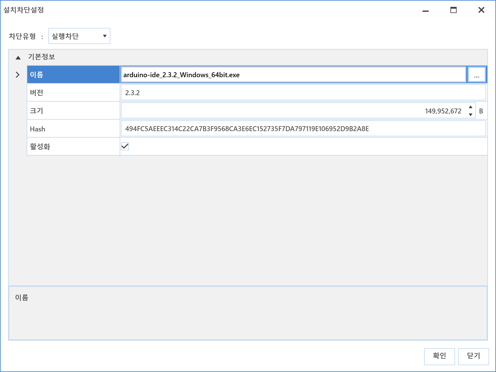

5-1-2-4. 설치 차단
5-1-2-4. 설치 차단
Source: https://www.sweeper.or.kr/etc/manual/5124.html
5-1-2-4. 설치 차단
5. 소프트웨어 ›› 5-1. 자산관리 ›› 5-1-2. SWDB ››


소프트웨어 설치를 차단하기 위한 파일 정보를 등록합니다. 실행차단과 의미는 동일하나 설치와 관련된 파일정보들을 등록하여 차단하는 점에서 차이가 있습니다.

설정방법
- 추가 버튼을 클릭합니다.
- 설치차단 설정 화면이 팝업됩니다.

-
차단 유형을 선택합니다.
-
MSI 파일 차단 : Msiexec.exe를 통해 설치되는 확장자 MSI 파일을 차단하기 위한 설정입니다.

- 복사차단
파일이나 폴더가 하드디스크에 복사되는 것을 차단합니다.

-
폴더 여부
-
이름에 폴더를 선택한 뒤 폴더 여부를 체크하면 폴더 생성을 차단합니다.
-
설치 시 생성되는 폴더를 차단하기 위한 설정입니다.
-
이름 예시
-
C:\Temp\Test\*
-
C:\Temp\Test 폴더 내 복사차단
-
C:\Temp\Test
-
C:\Temp\Test 폴더 자체 생성을 막음
-
a.exe
-
a.exe 가 존재하는 폴더에는 a.exe 복사 가능
-
a.exe 가 존재하지 않는 폴더로는 a.exe 복사 불가
-
실행차단
파일 Hash(SHA2) 값을 기준으로 실행되는 것을 차단합니다.

- 읽기차단
Setup.exe 같은 실행파일이 CAB과 같은 압축파일등을 읽는 행위를 차단합니다.
Setup.exe를 차단해도 이후 동작으로 인해 설치되는 것을 방지하기 위한 차단 설정입니다.

- 타이틀차단
설치 시 윈도우 타이틀에 표시되는 명칭을 기준으로 차단하는 설정합니다.
간혹 타이틀 이름으로 제어되지 않는 프로그램도 있습니다. (ex SWeeper Agent 프로그램)

- 등록을 완료합니다.

참고사항1
- 최근 프로그램들은 복잡 다양하여, 한가지 방법으로 모든 설치를 차단할 수 없습니다. 그러므로 다양한 설치차단 방법으로 관리자는 차단 여부를 확인 후, 전사적용하여야 합니다.
- 이미 설치된 불법 소프트웨어는 설치차단에 등록되어있어도 설치차단이 동작하지 않습니다.
© Copyright SWeeper Inc.. All Rights Reserved